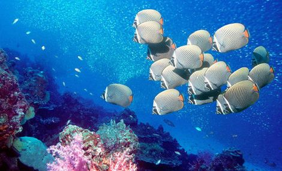

泡泡潜水俱乐部为您量身打造一流的潜水服务。让您开心而来，满意而归……

三亚大东海旅游区四面环海，气候宜人，环境优美，有“旅游天堂”之美誉。阳光、海洋、沙滩，还有当地的民俗文化，构成了极富特色的三亚风光。这里一年四季都可以享受日光浴、冲浪、帆船、帆板、水上摩托、沙滩排球……，在众多休闲运动中当然以潜水最佳。
自从休闲潜水于近年兴起，潜水不再是职业运动员、海洋科学家、摄影师和其他深海工作者的专利，普通人一样可以享受鱼翔浅底的乐趣。如今，世界各地分布着数千个潜水俱乐部，流行程度丝毫不亚于滑雪。
休闲潜水在比较浅的水域进行（30米深度以内），更看重个人体验、娱乐性和好奇心的满足，只要掌握一些简单易学的基本功，就可以下水畅游。而且，不会游泳的人由于没有长期游泳养成的习惯影响，反而更容易掌握潜水的要领。目前，潜水俱乐部提供不同层次的潜水体验、培训和考试服务，你可以自由选择适合自己的玩法。
在岸上认真听15分钟注意事项的讲解，学会一些简单的水下交流手势，披挂上潜水装备，专门的导潜员就带领你缓缓下潜，在水底世界开始感官和心理的新鲜体验。穿梭在多彩的珊瑚、海葵、虾兵蟹将之间，加入热带鱼群的行列，成为绮丽景观的一部分。
任何一个年满12岁的健康人士，向潜水俱乐部报名，经过20小时的培训（包括4小时理论课和16小时水下实践），掌握下潜、水中静止、水中交流以及上浮等基本功，考试合格后，即可获得世界通用的CMAS星级潜水员证书，有资格在全球各个潜水点独立下潜。从此，海洋对于你的意义将远远超越旅游胜地的沙滩、海浪、椰树和观光客。
潜水并不像许多人想像的那么危险，据统计，每年因潜水事故死亡的人数甚至少于因蜜蜂叮咬死亡的人数。休闲潜水的运动规则更是将潜水活动限制在安全范围之内，从设备的穿戴使用、潜水计划的制定实施，到紧急情况的处理，一切都有规章可循。
Copyright©2008 BubbleUnder.com.All Rights Reserved. 版权所有 泡泡潜水俱乐部
地址：海南省三亚市碧海蓝大酒店海日阁8A22号
咨询电话：0898-88233755 88233752 13976113755